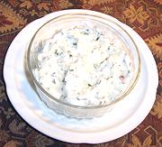

|
Potato & Yogurt SaladIndia - Aloo Rayta | ||||
| Serves: Effort: Sched: DoAhead: |
4 side ** 1-1/2 hrs Yes |
Raytas make wonderful side dishes to moderate spicy Indian food. This one is more substantial (though a little less cooling) than the Cucumber version, and can serve also as a low calory potato salad. | |||
|
2 3 1 1-1/2 2 1/2 1/2 2 1/2 1-1/2 2 |
# oz T t t t T t c T |
Potatoes (1) Onion Chili Serrano Oil Mustard seeds Cumin seeds Salt Cilantro Coriander seeds Yogurt (2) Lemon Juice |
Prep - (1-1/2 hr - 20 min work)
|
igv_potatoyogurt1 040410 - www.clovegarden.com
©Andrew Grygus - agryg@aaxnet.com - Linking to and
non-commercial use of this page is permitted.